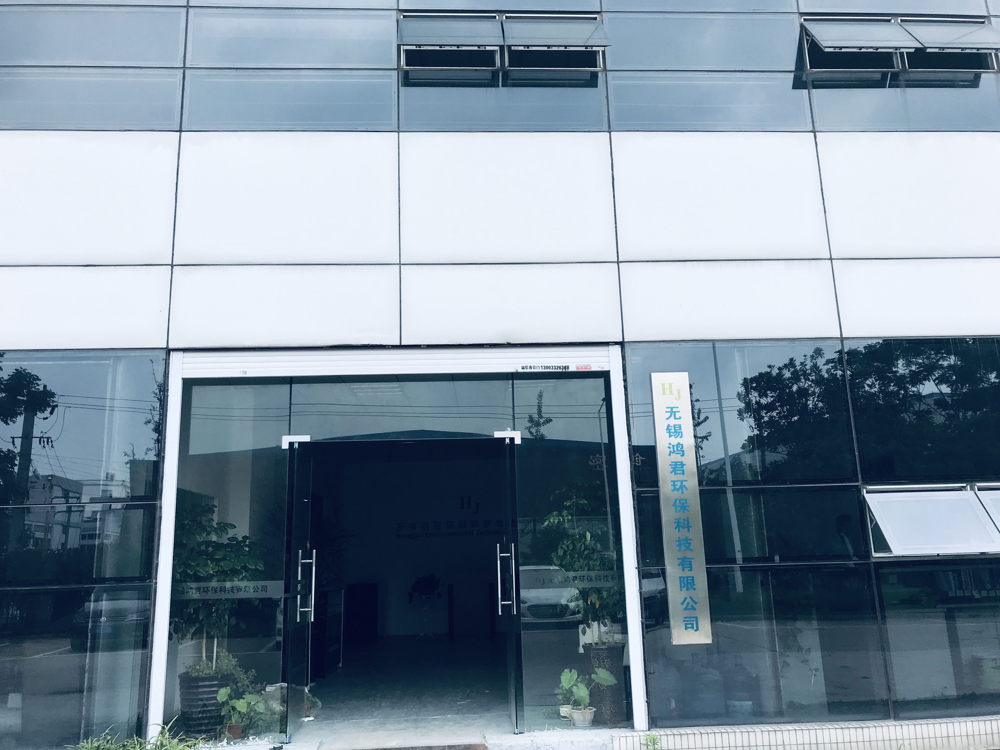

<!DOCTYPE html>
<html>
<head>
  <meta http-equiv="Content-Type" content="text/html; charset=utf-8"/>
  <meta name="viewport" content="initial-scale=1.0, user-scalable=no"/>
  <style type="text/css">
    body, html, #allmap {
      width: 100%;
      height: 730px;
      overflow: hidden;
      margin: 0;
      font-family: "微软雅黑";
    }
  </style>
  <script type="text/javascript" src="//api.map.baidu.com/api?v=2.0&ak=7GamRZ6AhMqoITm5r1tB5v8D7e75xCnz"></script>
  <script type="text/javascript"
          src="//api.map.baidu.com/library/SearchInfoWindow/1.5/src/SearchInfoWindow_min.js"></script>
  <link rel="stylesheet" href="//api.map.baidu.com/library/SearchInfoWindow/1.5/src/SearchInfoWindow_min.css"/>
  <title>地图展示</title>
</head>
<body>
<div id="allmap"></div>
</body>
</html>
<script type="text/javascript">
  // 百度地图API功能
  var map = new BMap.Map("allmap");    // 创建Map实例
  var point = new BMap.Point(120.42274, 31.577717);
  map.centerAndZoom(point, 17);  // 初始化地图,设置中心点坐标和地图级别

  var content = '<div style="margin:0;line-height:20px;padding:2px;">' +
    '' +
    '地址：无锡市新吴区梅村锡达路502号 <br/>电话: 0510-88279721/15995211595/15358983291<br/>简介：无锡鸿君环保科技有限公司是一家主要服务于垃圾焚烧发电领域的高科技公司。' +
    '</div>';

  //创建检索信息窗口对象
  var searchInfoWindow = null;
  searchInfoWindow = new BMapLib.SearchInfoWindow(map, content, {
    title: "无锡鸿君环保科技",      //标题
    width: 290,             //宽度
    height: 120,              //高度
    panel: "panel",         //检索结果面板
    enableAutoPan: false,     //自动平移
    searchTypes: [
      // BMAPLIB_TAB_SEARCH,   //周边检索
      BMAPLIB_TAB_TO_HERE,  //到这里去
      // BMAPLIB_TAB_FROM_HERE //从这里出发
    ]
  });
  var marker = new BMap.Marker(point); //创建marker对象
  searchInfoWindow.open(marker);
  marker.addEventListener("click", function (e) {
    searchInfoWindow.open(marker);
  })
  map.addOverlay(marker); //在地图中添加marker
</script>
